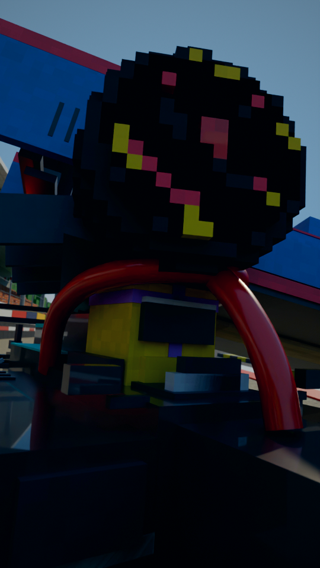
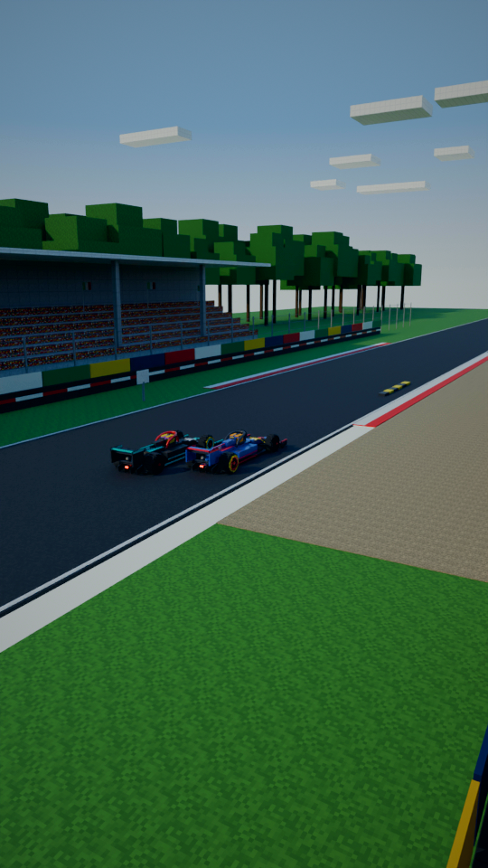
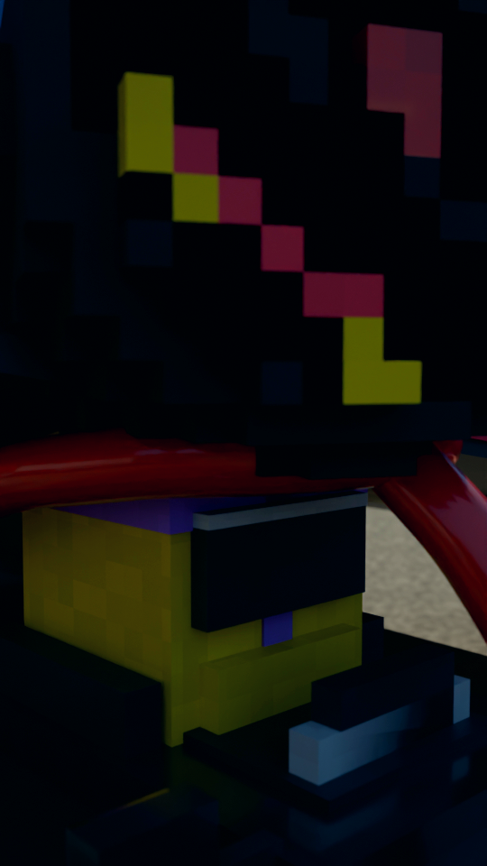
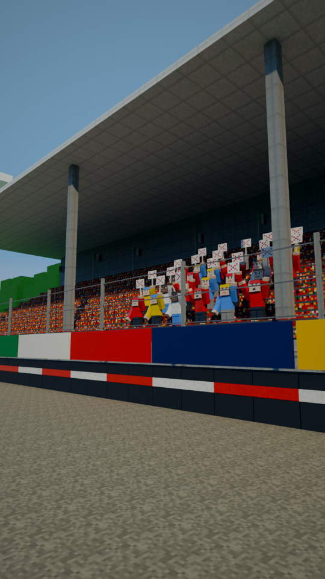
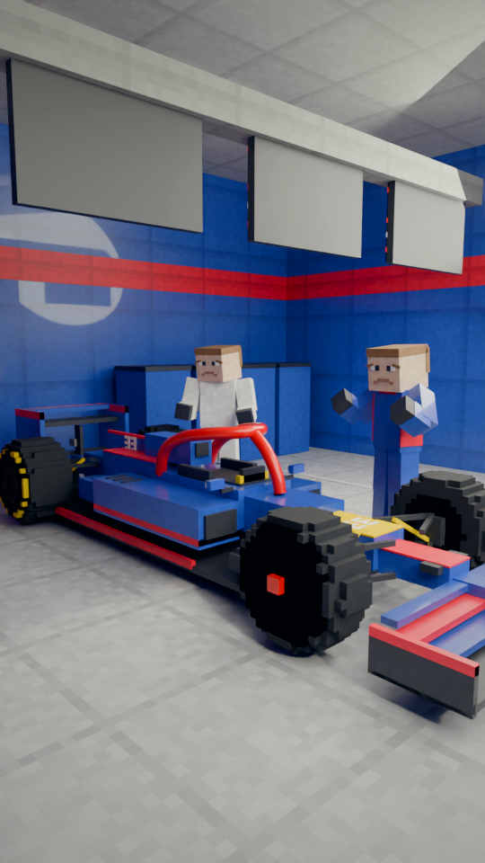
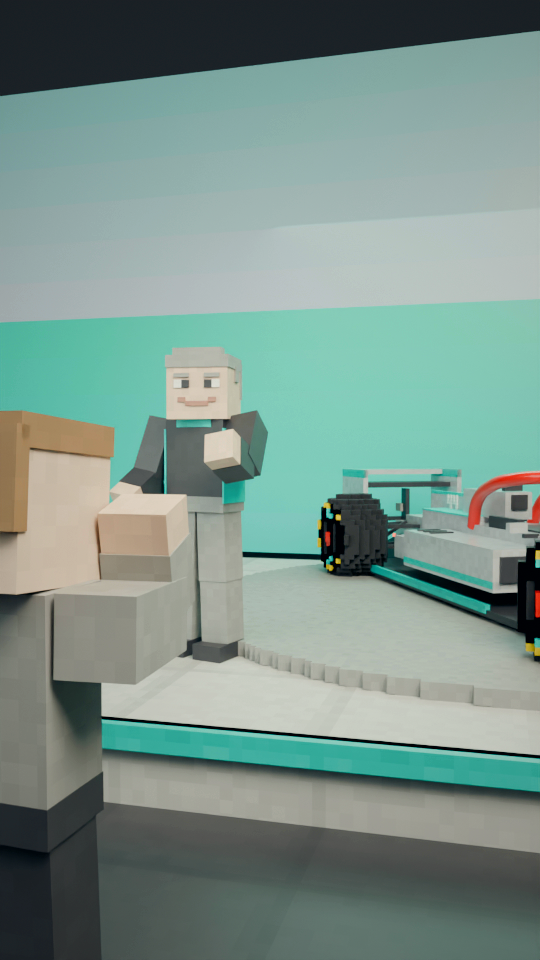

“Imagine a Formula One car landing on your head.”
Driver's eye, looking straight up through the red halo: the underside of a navy car drops out of the sky toward the lens.

“Lewis Hamilton doesn't have to.”
Low, front three-quarter: Hamilton's silver car (yellow helmet) at speed at Monza.

“At Monza in 2021,”
At Monza in 2021: parkland, kerbs, the silver and the navy car side by side into the chicane.

“Max Verstappen's car landed on top of his. Between”
Wide, in the gravel: Verstappen's navy car resting on top of Hamilton's silver car.

“his head and the tyre”
Macro: the navy car's rear tyre sitting on the red halo, inches above the yellow helmet.

“was a curved bar called the halo.”
White studio: a clay-grey car, the halo picked out in red. 'A curved bar called the halo.'

“When it arrived in 2018, fans called it ugly, and”
2018: from the track, fans in the grandstand hold up red-X boards as a car with a halo goes by.

“some drivers agreed. Mercedes”
Two drivers, helmets off, look the halo over, unconvinced.

“boss Toto Wolff said, "If”
2018 car launch, dim stage: the Mercedes boss beside the new silver car.

“you give me a chainsaw, I would take it off." But”
He holds a chainsaw in both hands, aimed at the halo. 'If you give me a chainsaw, I would take it off.'

“it's built to hold about twelve tonnes: a double-decker bus. In”
Test rig: the halo bolted to a steel block, a red double-decker bus resting on it (overlay: 12 t).

“Bahrain in 2020, Romain”
Bahrain 2020, night: floodlights, Grosjean's white car on the straight.